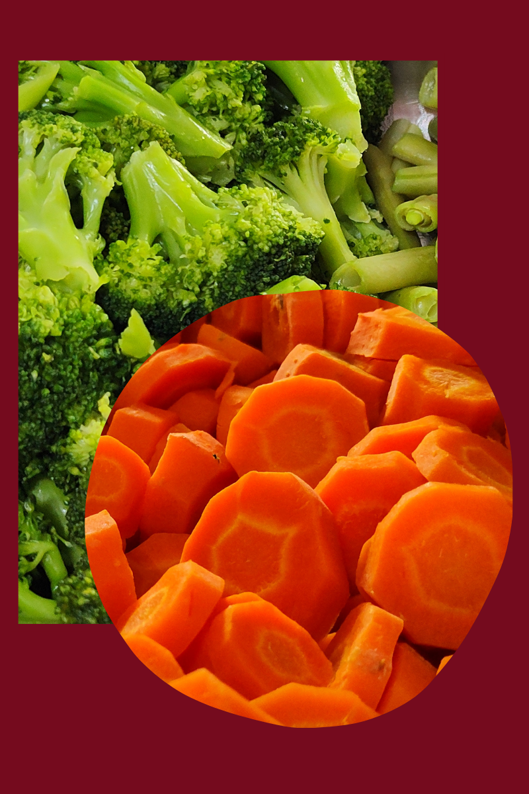

O Cozinha da Chácara é o destino ideal para quem busca uma experiência gastronômica saudável e saborosa. Localizado na charmosa Chácara Klabin, o restaurante oferece pratos frescos e de alta qualidade, preparados com ingredientes selecionados e um toque especial de criatividade. Com um cardápio que celebra o melhor da culinária saudável, o Cozinha da Chácara proporciona um ambiente acolhedor e autêntico, perfeito para desfrutar de refeições nutritivas sem abrir mão do sabor.